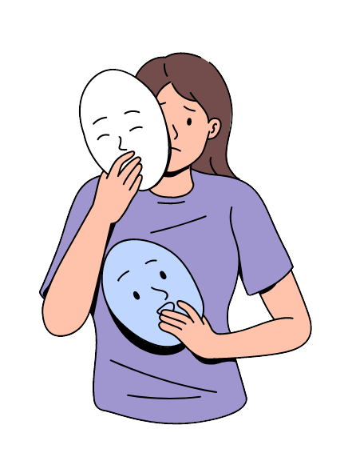
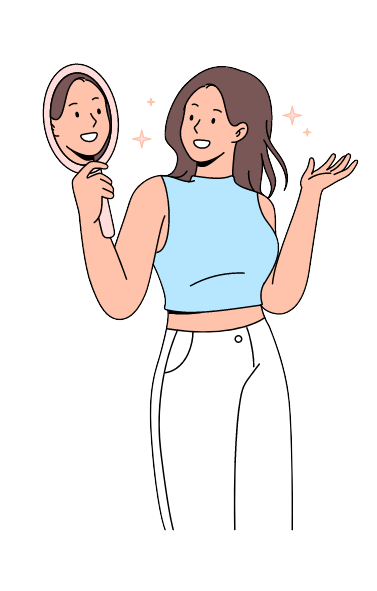

Datos importantes

Signos y síntomas
Todos los problemas de salud mental son manifestados por lo general con cambios abruptos en el estado de ánimo, en los hábitos alimenticios o de sueño; también se pueden ver reflejados con los niveles de energía y con sentimientos de confusión o preocupación.

¿Qué debo hacer?
Dado el caso de que identifiques alguna sintomatología de la mencionada, ¡NO TE AUTODIAGNOSTIQUES, NI MEDIQUES!, busca ayuda de profesionales, la psicología tiene como objetivo brindar orientación a las personas en cualquier situación de la vida, dando herramientas para afrontar de forma más eficaz dichos, así como los trastornos de salud mental.
Trabajemos juntos
Te dejamos un video con los temas a tratar para establecer una adecuada salud mental.